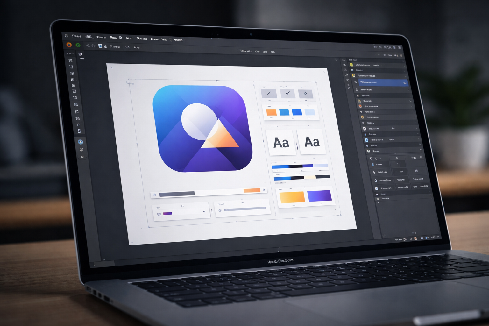
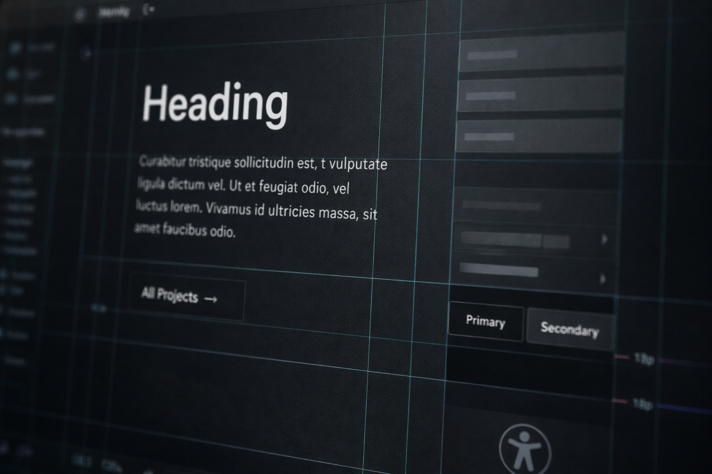

Timeless design.
Endless creativity.
Baseline Studio designs and builds high-quality websites that balance aesthetics with function.
Work
Selected projects that prioritize clarity, performance, and craft.
A clean, high-performance marketing site built for speed, clarity, and conversion.
Brand-forward web presence with a restrained system and strong typographic hierarchy.
A rebuild focused on maintainability, accessibility, and measurable load-time gains.
Core Qualities
Engineering discipline applied to design and build.
Fast by Design
Performance is built in from the first line of code—speed, stability, and responsiveness without excess.
Lean assets, careful structure, and measured motion keep load times sharp without sacrificing craft.

Structured Aesthetics
Design treated as a system. Typography, spacing, and layout remain consistent.
A restrained system keeps decisions aligned, so the work feels cohesive across every page.

Committed to Quality
Standards and care guide every decision—work that’s accessible, maintainable, and responsibly executed.
The build is reviewed for clarity, durability, and accessibility before it ships.
About
Baseline Studio builds more than websites—we build connections. We connect people with ideas, products, and services that matter.
Contact
Email: ben@baselinestudiodesign.com